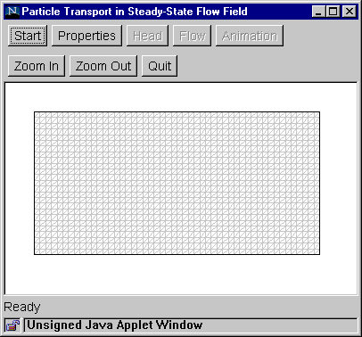

Step 1: Start
This step sets up the flow domain, mesh, and average hydraulic gradient.
- Click the "Start" button to bring up the Start
Dialog Box.
- Enter the size of a square element, number of
rows and column, and average hydraulic gradient. For example, if the
element size is 10 m, and there are 40 columns and 20 rows, the grid
will be 400 m by 200 m.
- Click "OK".
The program generates a rectangular mesh
and then splits each square element into two triangular elements.

Go to step 2
Return to Introduction
|